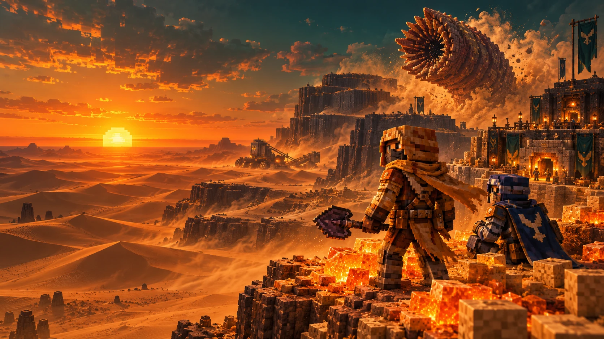

PAPER 1.21.4 JAVA 21 PROJECT DUNE
The spice
must flow.
A desert worth surviving.
A universe worth building.
Bring Arrakis to Minecraft. Choose your House, walk the dunes, harvest melange, and face the maker beneath the sand.

PAPER 1.21.4 JAVA 21 PROJECT DUNE
A desert worth surviving.
A universe worth building.
Bring Arrakis to Minecraft. Choose your House, walk the dunes, harvest melange, and face the maker beneath the sand.